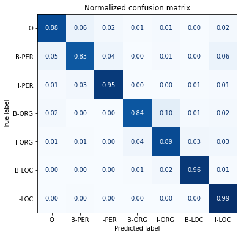
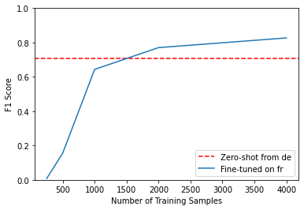

Notes on Transformers Book Ch. 4
- Introduction
- Project: Multilingual Named Entity Recognition
- The Dataset
- Multilingual Transformers
- A Closer Look at Tokenization
- Transformers for Named Entity Recognition
- The Anatomy of the Transformers Model Class
- Tokenizing Texts for NER
- Performance Measures
- Fine-Tuning XLM-RoBERTa
- Error Analysis
- Cross-Lingual Transfer
- References
import transformers
import datasets
import accelerate
# Only print error messages
transformers.logging.set_verbosity_error()
datasets.logging.set_verbosity_error()
transformers.__version__, datasets.__version__, accelerate.__version__ ('4.11.3', '1.16.1', '0.5.1')import ast
# https://astor.readthedocs.io/en/latest/
import astor
import inspect
import textwrap
def print_source(obj, exclude_doc=True):
# Get source code
source = inspect.getsource(obj)
# Remove any common leading whitespace from every line
cleaned_source = textwrap.dedent(source)
# Parse the source into an AST node.
parsed = ast.parse(cleaned_source)
for node in ast.walk(parsed):
# Skip any nodes that are not class or function definitions
if not isinstance(node, (ast.FunctionDef, ast.ClassDef, ast.AsyncFunctionDef)):
continue
if exclude_doc and len(node.body) > 1: node.body = node.body[1:]
print(astor.to_source(parsed))Introduction
- Non-English pretrained models typically exist only for languages like German, Russian, or Mandarin, where plenty of web text is available for pretraining.
- Avoid maintaining multiple monolingual models in production when possible.
- Transformer models pretrained on large corpora across many languages can perform zero-shot cross-lingual transfer.
- We can fine-tune a model using one language and apply it to others without further training.
- Multilingual transformers are well-suited for situations where a speaker alternates between two or more languages in the context of a single conversation.
Project: Multilingual Named Entity Recognition
- The goal is to fine-tine the transformer model XLM-RoBERTa to perform named entity recognition for a customer in Switzerland, where there are four national languages.
- We will use German, French, Italian, and English as the four languages.
- Named entity recognition involves extracting real-world objects like products, places, and people from a piece of text.
- Some potential NER applications include gaining insights from company documents, augmenting the quality of search engines, and building a structured database from a corpus.
The Dataset
WikiAnn (a.k.a PAN-X)
- WikiAnn is a dataset for cross-lingual name tagging and linking based on Wikipedia articles in 295 languages.
- Each article has annotations for location, person, and organization tags in the IOB2 format.
- The IOB2 format indicates the beginning of an entity with a
B-prefix, consecutive tags belonging to the same entity with anI-prefix, and tokens that do not belong to any entity with anOtag.
- The IOB2 format indicates the beginning of an entity with a
- WikiANN is a subset of the XTREME: A Massively Multilingual Multi-task Benchmark for Evaluating Cross-lingual Generalization benchmark.
- Cross-lingual Name Tagging and Linking for 282 Languages
- Hugging Face Dataset Card
import pandas as pd
pd.set_option('max_colwidth', None)
pd.set_option('display.max_rows', None)
pd.set_option('display.max_columns', None)# An example of a sequence annotated with named entities in IOB2 format
toks = "Jeff Dean is a computer scientist at Google in California".split()
lbls = ["B-PER", "I-PER", "O", "O", "O", "O", "O", "B-ORG", "O", "B-LOC"]
pd.DataFrame(data=[toks, lbls], index=['Tokens', 'Tags'])| 0 | 1 | 2 | 3 | 4 | 5 | 6 | 7 | 8 | 9 | |
|---|---|---|---|---|---|---|---|---|---|---|
| Tokens | Jeff | Dean | is | a | computer | scientist | at | in | California | |
| Tags | B-PER | I-PER | O | O | O | O | O | B-ORG | O | B-LOC |
from datasets import get_dataset_config_namesget_dataset_config_names
- Documentation
- Get the list of available configuration names for a particular dataset.
print_source(get_dataset_config_names) def get_dataset_config_names(path: str, revision: Optional[Union[str,
Version]]=None, download_config: Optional[DownloadConfig]=None,
download_mode: Optional[GenerateMode]=None, force_local_path: Optional[
str]=None, dynamic_modules_path: Optional[str]=None, data_files:
Optional[Union[Dict, List, str]]=None, **download_kwargs):
dataset_module = dataset_module_factory(path, revision=revision,
download_config=download_config, download_mode=download_mode,
force_local_path=force_local_path, dynamic_modules_path=
dynamic_modules_path, data_files=data_files, **download_kwargs)
builder_cls = import_main_class(dataset_module.module_path)
return list(builder_cls.builder_configs.keys()) or [dataset_module.
builder_kwargs.get('name', 'default')]xtreme Hugging Face Dataset Card
# Get the names of the subsets for the XTREME dataset
xtreme_subsets = get_dataset_config_names("xtreme")
print(f"XTREME has {len(xtreme_subsets)} configurations") XTREME has 183 configurationspd.DataFrame(xtreme_subsets).T.style.hide(axis='columns').hide(axis='index')| XNLI | tydiqa | SQuAD | PAN-X.af | PAN-X.ar | PAN-X.bg | PAN-X.bn | PAN-X.de | PAN-X.el | PAN-X.en | PAN-X.es | PAN-X.et | PAN-X.eu | PAN-X.fa | PAN-X.fi | PAN-X.fr | PAN-X.he | PAN-X.hi | PAN-X.hu | PAN-X.id | PAN-X.it | PAN-X.ja | PAN-X.jv | PAN-X.ka | PAN-X.kk | PAN-X.ko | PAN-X.ml | PAN-X.mr | PAN-X.ms | PAN-X.my | PAN-X.nl | PAN-X.pt | PAN-X.ru | PAN-X.sw | PAN-X.ta | PAN-X.te | PAN-X.th | PAN-X.tl | PAN-X.tr | PAN-X.ur | PAN-X.vi | PAN-X.yo | PAN-X.zh | MLQA.ar.ar | MLQA.ar.de | MLQA.ar.vi | MLQA.ar.zh | MLQA.ar.en | MLQA.ar.es | MLQA.ar.hi | MLQA.de.ar | MLQA.de.de | MLQA.de.vi | MLQA.de.zh | MLQA.de.en | MLQA.de.es | MLQA.de.hi | MLQA.vi.ar | MLQA.vi.de | MLQA.vi.vi | MLQA.vi.zh | MLQA.vi.en | MLQA.vi.es | MLQA.vi.hi | MLQA.zh.ar | MLQA.zh.de | MLQA.zh.vi | MLQA.zh.zh | MLQA.zh.en | MLQA.zh.es | MLQA.zh.hi | MLQA.en.ar | MLQA.en.de | MLQA.en.vi | MLQA.en.zh | MLQA.en.en | MLQA.en.es | MLQA.en.hi | MLQA.es.ar | MLQA.es.de | MLQA.es.vi | MLQA.es.zh | MLQA.es.en | MLQA.es.es | MLQA.es.hi | MLQA.hi.ar | MLQA.hi.de | MLQA.hi.vi | MLQA.hi.zh | MLQA.hi.en | MLQA.hi.es | MLQA.hi.hi | XQuAD.ar | XQuAD.de | XQuAD.vi | XQuAD.zh | XQuAD.en | XQuAD.es | XQuAD.hi | XQuAD.el | XQuAD.ru | XQuAD.th | XQuAD.tr | bucc18.de | bucc18.fr | bucc18.zh | bucc18.ru | PAWS-X.de | PAWS-X.en | PAWS-X.es | PAWS-X.fr | PAWS-X.ja | PAWS-X.ko | PAWS-X.zh | tatoeba.afr | tatoeba.ara | tatoeba.ben | tatoeba.bul | tatoeba.deu | tatoeba.cmn | tatoeba.ell | tatoeba.est | tatoeba.eus | tatoeba.fin | tatoeba.fra | tatoeba.heb | tatoeba.hin | tatoeba.hun | tatoeba.ind | tatoeba.ita | tatoeba.jav | tatoeba.jpn | tatoeba.kat | tatoeba.kaz | tatoeba.kor | tatoeba.mal | tatoeba.mar | tatoeba.nld | tatoeba.pes | tatoeba.por | tatoeba.rus | tatoeba.spa | tatoeba.swh | tatoeba.tam | tatoeba.tel | tatoeba.tgl | tatoeba.tha | tatoeba.tur | tatoeba.urd | tatoeba.vie | udpos.Afrikaans | udpos.Arabic | udpos.Basque | udpos.Bulgarian | udpos.Dutch | udpos.English | udpos.Estonian | udpos.Finnish | udpos.French | udpos.German | udpos.Greek | udpos.Hebrew | udpos.Hindi | udpos.Hungarian | udpos.Indonesian | udpos.Italian | udpos.Japanese | udpos.Kazakh | udpos.Korean | udpos.Chinese | udpos.Marathi | udpos.Persian | udpos.Portuguese | udpos.Russian | udpos.Spanish | udpos.Tagalog | udpos.Tamil | udpos.Telugu | udpos.Thai | udpos.Turkish | udpos.Urdu | udpos.Vietnamese | udpos.Yoruba |
Note: We are only interested in the PAN-X subsets for this project.
# Look for configuration names containing 'PAN'
panx_subsets = [s for s in xtreme_subsets if s.startswith("PAN")]
len(panx_subsets), panx_subsets[:3] (40, ['PAN-X.af', 'PAN-X.ar', 'PAN-X.bg'])Note: * There are 40 PAN-X subsets. * Each subset has a two-letter suffix indicating the ISO 639-1 language code. * German (de) * French (fr) * Italian (it) * English (en)
from datasets import load_dataset
from collections import defaultdict
from datasets import DatasetDict# Specify the desired language codes
langs = ["de", "fr", "it", "en"]
# Specify the percentage each language should contribute to the total dataset
fracs = [0.629, 0.229, 0.084, 0.059]Note: * These percentages represent the spoken proportions for each language in Switzerland. * This language imbalance simulates the common situation where acquiring labeled examples in a minority language is cost-prohibitive.
Dataset.shuffle
- Documentation
- Create a new dataset with shuffled rows.
Dataset.select
- Documentation
- Create a new dataset with rows selected following the list/array of indices.
# Return a DatasetDict if a key doesn't exist
panx_ch = defaultdict(DatasetDict)
for lang, frac in zip(langs, fracs):
# Load monolingual corpus
ds = load_dataset("xtreme", name=f"PAN-X.{lang}")
# Shuffle and downsample each split according to spoken proportion
for split in ds:
panx_ch[lang][split] = (
ds[split]
# Shuffle the dataset split rows
.shuffle(seed=0)
# Select subset of dataset split
.select(range(int(frac * ds[split].num_rows))))pd.DataFrame({lang: [panx_ch[lang]["train"].num_rows] for lang in langs}, index=["Number of training examples"])| de | fr | it | en | |
|---|---|---|---|---|
| Number of training examples | 12580 | 4580 | 1680 | 1180 |
train_size = sum([panx_ch[lang]['train'].num_rows for lang in langs])
train_size 20020pd.DataFrame(
{lang: [panx_ch[lang]["train"].num_rows,
f'{panx_ch[lang]["train"].num_rows/train_size*100:.2f}%'] for lang in langs
}, index=["Number of training examples", "Proportion of Dataset"])| de | fr | it | en | |
|---|---|---|---|---|
| Number of training examples | 12580 | 4580 | 1680 | 1180 |
| Proportion of Dataset | 62.84% | 22.88% | 8.39% | 5.89% |
for lang in langs: print(panx_ch[lang]["train"]) Dataset({
features: ['tokens', 'ner_tags', 'langs'],
num_rows: 12580
})
Dataset({
features: ['tokens', 'ner_tags', 'langs'],
num_rows: 4580
})
Dataset({
features: ['tokens', 'ner_tags', 'langs'],
num_rows: 1680
})
Dataset({
features: ['tokens', 'ner_tags', 'langs'],
num_rows: 1180
})element = panx_ch["de"]["train"][0]
pd.DataFrame(element).T| 0 | 1 | 2 | 3 | 4 | 5 | 6 | 7 | 8 | 9 | 10 | 11 | |
|---|---|---|---|---|---|---|---|---|---|---|---|---|
| tokens | 2.000 | Einwohnern | an | der | Danziger | Bucht | in | der | polnischen | Woiwodschaft | Pommern | . |
| ner_tags | 0 | 0 | 0 | 0 | 5 | 6 | 0 | 0 | 5 | 5 | 6 | 0 |
| langs | de | de | de | de | de | de | de | de | de | de | de | de |
Note:
- The German text translates to “2,000 inhabitants at the Gdansk Bay in the Polish voivodeship of Pomerania.”
- Gdansk Bay is a bay in the Baltic Sea.
- The word “voivodeship” corresponds to a state in Poland.
- The ner_tags column corresponds to the mapping of each entity to a class ID.
- The Dataset object has a “features” attribute that specifies the underlying data types associated with each column.
tags = panx_ch["de"]["train"].features["ner_tags"].feature
tags ClassLabel(num_classes=7, names=['O', 'B-PER', 'I-PER', 'B-ORG', 'I-ORG', 'B-LOC', 'I-LOC'], names_file=None, id=None)tags.names ['O', 'B-PER', 'I-PER', 'B-ORG', 'I-ORG', 'B-LOC', 'I-LOC']Map the class IDs to the corresponding tag names
def create_tag_names(batch):
return {"ner_tags_str": [tags.int2str(idx) for idx in batch["ner_tags"]]}
panx_de = panx_ch["de"].map(create_tag_names)pd.DataFrame(panx_de["train"][0]).reindex(columns=["tokens", "ner_tags_str","ner_tags","langs"]).T| 0 | 1 | 2 | 3 | 4 | 5 | 6 | 7 | 8 | 9 | 10 | 11 | |
|---|---|---|---|---|---|---|---|---|---|---|---|---|
| tokens | 2.000 | Einwohnern | an | der | Danziger | Bucht | in | der | polnischen | Woiwodschaft | Pommern | . |
| ner_tags_str | O | O | O | O | B-LOC | I-LOC | O | O | B-LOC | B-LOC | I-LOC | O |
| ner_tags | 0 | 0 | 0 | 0 | 5 | 6 | 0 | 0 | 5 | 5 | 6 | 0 |
| langs | de | de | de | de | de | de | de | de | de | de | de | de |
from collections import CounterCalculate the frequencies of each entity across each split
split2freqs = defaultdict(Counter)
for split, dataset in panx_de.items():
for row in dataset["ner_tags_str"]:
for tag in row:
if tag.startswith("B"):
tag_type = tag.split("-")[1]
split2freqs[split][tag_type] += 1
pd.DataFrame.from_dict(split2freqs, orient="index")| ORG | LOC | PER | |
|---|---|---|---|
| validation | 2683 | 3172 | 2893 |
| test | 2573 | 3180 | 3071 |
| train | 5366 | 6186 | 5810 |
Note: The distributions of the entity frequencies are roughly the same for each split.
Multilingual Transformers
- Multilingual transformers use a corpus consisting of documents in many languages for pretraining.
- The models do not receive any explicit information to differentiate among languages.
- The resulting linguistic representations generalize well across languages for many downstream tasks.
- Many use the CoNLL-2002 and CoNLL-2003 datasets as benchmarks to measure the progress of cross-lingual transfer for named entity recognition for English, Dutch, Spanish, and German.
Evaluation Methods
- en: Fine-tune using the English training data and then evaluate the model on each language’s test set.
- each: Fine-tune and evaluate using monolingual test data to measure per-language performance.
- all: Fine-tune using all the training data to evaluate the model on each language’s test set.
A Closer Look at Tokenization
- XLM-RoBERTa uses the SentencePiece subword tokenizer instead of the WordPiece tokenizer.
from transformers import AutoTokenizerbert_model_name = "bert-base-cased"
xlmr_model_name = "xlm-roberta-base"
bert_tokenizer = AutoTokenizer.from_pretrained(bert_model_name)
xlmr_tokenizer = AutoTokenizer.from_pretrained(xlmr_model_name)Compare the WordPiece and SentencePiece tokenizers
text = "Jack Sparrow loves New York!"
bert_tokens = bert_tokenizer(text).tokens()
xlmr_tokens = xlmr_tokenizer(text).tokens()pd.DataFrame([bert_tokens, xlmr_tokens], index=["BERT", "XLM-R"])| 0 | 1 | 2 | 3 | 4 | 5 | 6 | 7 | 8 | 9 | |
|---|---|---|---|---|---|---|---|---|---|---|
| BERT | [CLS] | Jack | Spa | ##rrow | loves | New | York | ! | [SEP] | None |
| XLM-R | <s> | _Jack | _Spar | row | _love | s | _New | _York | ! | </s> |
Note: SentencePiece uses <s> and </s> to indicate the start and end sequences.
The Tokenizer Pipeline
1. Normalization
- The normalization step includes the operations to clean up raw text, such as stripping whitespace and removing accented characters.
- Unicode normalization schemes replace the various ways to write the same character with standard forms.
- Unicode normalization is particularly effective when working with multilingual corpora.
- Lowercasing can help reduce the vocabulary size when the model only accepts and uses lowercase characters.
2. Pretokenization
- The pre-tokenization step splits a text into smaller objects, and the final tokens will be subunits of these objects.
- Some languages might require language-specific pre-tokenization methods.
3. Tokenizer Model
- The tokenizer model analyzes the training corpus to find the most commonly occurring groups of characters, which become the vocab.
4. Postprocessing
- The postprocessing step applies some additional transformations, such as adding special characters to the start or end of an input sequence.
The SentencePiece Tokenizer
- The SentencePiece tokenizer builds on the Unigram subword segmentation algorithm and encodes each input text as a sequence of Unicode characters.
- SentencePiece supports the byte-pair-encoding (BPE) algorithm and the unigram language model.
- SentencePiece replaces whitespace with the Unicode symbol
U+2581for_.
"".join(xlmr_tokens).replace(u"\u2581", " ") '<s> Jack Sparrow loves New York!</s>'Transformers for Named Entity Recognition
- For text classification, BERT uses the
[CLS]token to represent an entire sequence of text. - For named entity recognition, BERT feeds the representation of each input token through the same fully connected layer to output the entity of each one.
- We can assign the entity label to the first subword of a word and ignore the rest.
The Anatomy of the Transformers Model Class
- The Hugging Face Transformers library has dedicated classes for each architecture and task.
- We can extend existing models for specific use cases with little overhead.
Bodies and Heads
- Hugging Face Transformers splits model architectures into a body and head
- The body is task-agnostic, and the model head is unique to a specific downstream task.
Creating a Custom Model for Token Classification
import torch.nn as nn
from transformers import XLMRobertaConfig
from transformers.modeling_outputs import TokenClassifierOutput
from transformers.models.roberta.modeling_roberta import RobertaModel
from transformers.models.roberta.modeling_roberta import RobertaPreTrainedModelTokenClassifierOutput
- Documentation
- A base class for outputs of token classification models.
print_source(TokenClassifierOutput) @dataclass
class TokenClassifierOutput(ModelOutput):
loss: Optional[torch.FloatTensor] = None
logits: torch.FloatTensor = None
hidden_states: Optional[Tuple[torch.FloatTensor]] = None
attentions: Optional[Tuple[torch.FloatTensor]] = NoneModelOutput
- Documentation
- The base class for all model outputs.
RobertaModel
- Documentation
- A bare RoBERTa Model transformer outputting raw hidden-states without any specific head on top.
RobertaPreTrainedModel
- Source Code
- An abstract class to handle weights initialization and a simple interface for downloading and loading pretrained models.
XLMRobertaConfig() XLMRobertaConfig {
"attention_probs_dropout_prob": 0.1,
"bos_token_id": 0,
"classifier_dropout": null,
"eos_token_id": 2,
"hidden_act": "gelu",
"hidden_dropout_prob": 0.1,
"hidden_size": 768,
"initializer_range": 0.02,
"intermediate_size": 3072,
"layer_norm_eps": 1e-12,
"max_position_embeddings": 512,
"model_type": "xlm-roberta",
"num_attention_heads": 12,
"num_hidden_layers": 12,
"pad_token_id": 1,
"position_embedding_type": "absolute",
"transformers_version": "4.11.3",
"type_vocab_size": 2,
"use_cache": true,
"vocab_size": 30522
}class XLMRobertaForTokenClassification(RobertaPreTrainedModel):
# Use the standard XLM-RoBERTa settings.
config_class = XLMRobertaConfig
def __init__(self, config):
super().__init__(config)
self.num_labels = config.num_labels
# Load model body
# Set add_pooling_layer to False to get all hidden states in the output
self.roberta = RobertaModel(config, add_pooling_layer=False)
# Set up token classification head
self.dropout = nn.Dropout(config.hidden_dropout_prob)
self.classifier = nn.Linear(config.hidden_size, config.num_labels)
# Load and initialize weights
self.init_weights()
def forward(self, input_ids=None, attention_mask=None, token_type_ids=None,
labels=None, **kwargs):
# Use model body to get encoder representations
outputs = self.roberta(input_ids, attention_mask=attention_mask,
token_type_ids=token_type_ids, **kwargs)
# Apply classifier to encoder representation
sequence_output = self.dropout(outputs[0])
logits = self.classifier(sequence_output)
# Calculate losses
loss = None
if labels is not None:
loss_fct = nn.CrossEntropyLoss()
loss = loss_fct(logits.view(-1, self.num_labels), labels.view(-1))
# Return model output object
return TokenClassifierOutput(loss=loss, logits=logits,
hidden_states=outputs.hidden_states,
attentions=outputs.attentions)Loading a Custom Model
- We need to provide the tags for labeling each entity and mappings to convert between tags and IDs
Define the mappings to convert between tags and index IDs
index2tag = {idx: tag for idx, tag in enumerate(tags.names)}
tag2index = {tag: idx for idx, tag in enumerate(tags.names)}
index2tag, tag2index ({0: 'O',
1: 'B-PER',
2: 'I-PER',
3: 'B-ORG',
4: 'I-ORG',
5: 'B-LOC',
6: 'I-LOC'},
{'O': 0,
'B-PER': 1,
'I-PER': 2,
'B-ORG': 3,
'I-ORG': 4,
'B-LOC': 5,
'I-LOC': 6})from transformers import AutoConfigOverride the default parameters stored in XLMRobertaConfig
xlmr_config = AutoConfig.from_pretrained(xlmr_model_name,
num_labels=tags.num_classes,
id2label=index2tag, label2id=tag2index)
xlmr_config XLMRobertaConfig {
"architectures": [
"XLMRobertaForMaskedLM"
],
"attention_probs_dropout_prob": 0.1,
"bos_token_id": 0,
"classifier_dropout": null,
"eos_token_id": 2,
"hidden_act": "gelu",
"hidden_dropout_prob": 0.1,
"hidden_size": 768,
"id2label": {
"0": "O",
"1": "B-PER",
"2": "I-PER",
"3": "B-ORG",
"4": "I-ORG",
"5": "B-LOC",
"6": "I-LOC"
},
"initializer_range": 0.02,
"intermediate_size": 3072,
"label2id": {
"B-LOC": 5,
"B-ORG": 3,
"B-PER": 1,
"I-LOC": 6,
"I-ORG": 4,
"I-PER": 2,
"O": 0
},
"layer_norm_eps": 1e-05,
"max_position_embeddings": 514,
"model_type": "xlm-roberta",
"num_attention_heads": 12,
"num_hidden_layers": 12,
"output_past": true,
"pad_token_id": 1,
"position_embedding_type": "absolute",
"transformers_version": "4.11.3",
"type_vocab_size": 1,
"use_cache": true,
"vocab_size": 250002
}import torchLoad a pretrained XLM-RoBERTa model with the custom classification head and configuration parameters
device = torch.device("cuda" if torch.cuda.is_available() else "cpu")
xlmr_model = (XLMRobertaForTokenClassification
.from_pretrained(xlmr_model_name, config=xlmr_config)
.to(device))Encode some sample text
text 'Jack Sparrow loves New York!'input_ids = xlmr_tokenizer.encode(text, return_tensors="pt")
pd.DataFrame([xlmr_tokens, input_ids[0].numpy()], index=["Tokens", "Input IDs"])| 0 | 1 | 2 | 3 | 4 | 5 | 6 | 7 | 8 | 9 | |
|---|---|---|---|---|---|---|---|---|---|---|
| Tokens | <s> | _Jack | _Spar | row | _love | s | _New | _York | ! | </s> |
| Input IDs | 0 | 21763 | 37456 | 15555 | 5161 | 7 | 2356 | 5753 | 38 | 2 |
Test model predictions with the untrained classifier
outputs = xlmr_model(input_ids.to(device)).logits
predictions = torch.argmax(outputs, dim=-1)
print(f"Number of tokens in sequence: {len(xlmr_tokens)}")
print(f"Shape of outputs: {outputs.shape}") Number of tokens in sequence: 10
Shape of outputs: torch.Size([1, 10, 7])Note: The logits have the shape [batch_size, num_tokens, num_tags].
preds = [tags.names[p] for p in predictions[0].cpu().numpy()]
pd.DataFrame([xlmr_tokens, preds], index=["Tokens", "Tags"])| 0 | 1 | 2 | 3 | 4 | 5 | 6 | 7 | 8 | 9 | |
|---|---|---|---|---|---|---|---|---|---|---|
| Tokens | <s> | _Jack | _Spar | row | _love | s | _New | _York | ! | </s> |
| Tags | I-ORG | I-ORG | I-ORG | I-ORG | I-ORG | I-ORG | I-ORG | I-ORG | I-ORG | I-ORG |
Note: The output is useless as the weights are still randomly initialized.
Wrap the prediction steps in a helper function
def tag_text(text, tags, model, tokenizer):
# Get tokens with special characters
tokens = tokenizer(text).tokens()
# Encode the sequence into IDs
input_ids = xlmr_tokenizer(text, return_tensors="pt").input_ids.to(device)
# Get predictions as distribution over 7 possible classes
outputs = model(input_ids)[0]
# Take argmax to get most likely class per token
predictions = torch.argmax(outputs, dim=2)
# Convert to DataFrame
preds = [tags.names[p] for p in predictions[0].cpu().numpy()]
return pd.DataFrame([tokens, preds], index=["Tokens", "Tags"])Tokenizing Texts for NER
Collect the words and tags as ordinary lists
de_example = panx_de['train'][0]words, labels = de_example["tokens"], de_example["ner_tags"]
pd.DataFrame([words,labels], index=["words", "labels"])| 0 | 1 | 2 | 3 | 4 | 5 | 6 | 7 | 8 | 9 | 10 | 11 | |
|---|---|---|---|---|---|---|---|---|---|---|---|---|
| words | 2.000 | Einwohnern | an | der | Danziger | Bucht | in | der | polnischen | Woiwodschaft | Pommern | . |
| labels | 0 | 0 | 0 | 0 | 5 | 6 | 0 | 0 | 5 | 5 | 6 | 0 |
Tokenize each word
tokenized_input = xlmr_tokenizer(de_example["tokens"], is_split_into_words=True)
pd.DataFrame(tokenized_input.values(), index=tokenized_input.keys())| 0 | 1 | 2 | 3 | 4 | 5 | 6 | 7 | 8 | 9 | 10 | 11 | 12 | 13 | 14 | 15 | 16 | 17 | 18 | 19 | 20 | 21 | 22 | 23 | 24 | |
|---|---|---|---|---|---|---|---|---|---|---|---|---|---|---|---|---|---|---|---|---|---|---|---|---|---|
| input_ids | 0 | 70101 | 176581 | 19 | 142 | 122 | 2290 | 708 | 1505 | 18363 | 18 | 23 | 122 | 127474 | 15439 | 13787 | 14 | 15263 | 18917 | 663 | 6947 | 19 | 6 | 5 | 2 |
| attention_mask | 1 | 1 | 1 | 1 | 1 | 1 | 1 | 1 | 1 | 1 | 1 | 1 | 1 | 1 | 1 | 1 | 1 | 1 | 1 | 1 | 1 | 1 | 1 | 1 | 1 |
Note: The is_split_into_words argument tells the tokenizer the input sequence is a list of separated words.
tokens = xlmr_tokenizer.convert_ids_to_tokens(tokenized_input["input_ids"])
pd.DataFrame(tokens, columns=["tokens"]).T| 0 | 1 | 2 | 3 | 4 | 5 | 6 | 7 | 8 | 9 | 10 | 11 | 12 | 13 | 14 | 15 | 16 | 17 | 18 | 19 | 20 | 21 | 22 | 23 | 24 | |
|---|---|---|---|---|---|---|---|---|---|---|---|---|---|---|---|---|---|---|---|---|---|---|---|---|---|
| tokens | <s> | _2.000 | _Einwohner | n | _an | _der | _Dan | zi | ger | _Buch | t | _in | _der | _polni | schen | _Wo | i | wod | schaft | _Po | mmer | n | _ | . | </s> |
Note: We can use the word_ids() function to mask the subword representations after the first subword.
BatchEncoding.word_ids.word_ids
- Documentation
- Get a list indicating the word corresponding to each token.
word_ids = tokenized_input.word_ids()
pd.DataFrame([tokens, word_ids], index=["Tokens", "Word IDs"])| 0 | 1 | 2 | 3 | 4 | 5 | 6 | 7 | 8 | 9 | 10 | 11 | 12 | 13 | 14 | 15 | 16 | 17 | 18 | 19 | 20 | 21 | 22 | 23 | 24 | |
|---|---|---|---|---|---|---|---|---|---|---|---|---|---|---|---|---|---|---|---|---|---|---|---|---|---|
| Tokens | <s> | _2.000 | _Einwohner | n | _an | _der | _Dan | zi | ger | _Buch | t | _in | _der | _polni | schen | _Wo | i | wod | schaft | _Po | mmer | n | _ | . | </s> |
| Word IDs | None | 0 | 1 | 1 | 2 | 3 | 4 | 4 | 4 | 5 | 5 | 6 | 7 | 8 | 8 | 9 | 9 | 9 | 9 | 10 | 10 | 10 | 11 | 11 | None |
Note: The <s> and </s> tokens map to None as they are not words from the original text.
Set -100 as the label for the start and end tokens and masked subwords
- The PyTorch cross-entropy loss class has an attribute called
ignore_indexwhose value is -100.
previous_word_idx = None
label_ids = []
for word_idx in word_ids:
if word_idx is None or word_idx == previous_word_idx:
label_ids.append(-100)
elif word_idx != previous_word_idx:
label_ids.append(labels[word_idx])
previous_word_idx = word_idx
labels = [index2tag[l] if l != -100 else "IGN" for l in label_ids]
index = ["Tokens", "Word IDs", "Label IDs", "Labels"]
pd.DataFrame([tokens, word_ids, label_ids, labels], index=index)| 0 | 1 | 2 | 3 | 4 | 5 | 6 | 7 | 8 | 9 | 10 | 11 | 12 | 13 | 14 | 15 | 16 | 17 | 18 | 19 | 20 | 21 | 22 | 23 | 24 | |
|---|---|---|---|---|---|---|---|---|---|---|---|---|---|---|---|---|---|---|---|---|---|---|---|---|---|
| Tokens | <s> | _2.000 | _Einwohner | n | _an | _der | _Dan | zi | ger | _Buch | t | _in | _der | _polni | schen | _Wo | i | wod | schaft | _Po | mmer | n | _ | . | </s> |
| Word IDs | None | 0 | 1 | 1 | 2 | 3 | 4 | 4 | 4 | 5 | 5 | 6 | 7 | 8 | 8 | 9 | 9 | 9 | 9 | 10 | 10 | 10 | 11 | 11 | None |
| Label IDs | -100 | 0 | 0 | -100 | 0 | 0 | 5 | -100 | -100 | 6 | -100 | 0 | 0 | 5 | -100 | 5 | -100 | -100 | -100 | 6 | -100 | -100 | 0 | -100 | -100 |
| Labels | IGN | O | O | IGN | O | O | B-LOC | IGN | IGN | I-LOC | IGN | O | O | B-LOC | IGN | B-LOC | IGN | IGN | IGN | I-LOC | IGN | IGN | O | IGN | IGN |
Wrap the tokenization and label alignment steps into a single function
def tokenize_and_align_labels(examples):
tokenized_inputs = xlmr_tokenizer(examples["tokens"], truncation=True,
is_split_into_words=True)
labels = []
for idx, label in enumerate(examples["ner_tags"]):
word_ids = tokenized_inputs.word_ids(batch_index=idx)
previous_word_idx = None
label_ids = []
for word_idx in word_ids:
if word_idx is None or word_idx == previous_word_idx:
label_ids.append(-100)
else:
label_ids.append(label[word_idx])
previous_word_idx = word_idx
labels.append(label_ids)
tokenized_inputs["labels"] = labels
return tokenized_inputsDefine a mapping function to encode the dataset
def encode_panx_dataset(corpus):
return corpus.map(tokenize_and_align_labels, batched=True,
remove_columns=['langs', 'ner_tags', 'tokens'])panx_ch["de"] DatasetDict({
validation: Dataset({
features: ['tokens', 'ner_tags', 'langs'],
num_rows: 6290
})
test: Dataset({
features: ['tokens', 'ner_tags', 'langs'],
num_rows: 6290
})
train: Dataset({
features: ['tokens', 'ner_tags', 'langs'],
num_rows: 12580
})
})panx_de_encoded = encode_panx_dataset(panx_ch["de"])
panx_de_encoded DatasetDict({
validation: Dataset({
features: ['attention_mask', 'input_ids', 'labels'],
num_rows: 6290
})
test: Dataset({
features: ['attention_mask', 'input_ids', 'labels'],
num_rows: 6290
})
train: Dataset({
features: ['attention_mask', 'input_ids', 'labels'],
num_rows: 12580
})
})Performance Measures
- Standard performance measures for NER tasks include precision, recall, and F1-score.
- The model needs to correctly predict all words of an entity for a prediction to count as correct.
seqval
- GitHub Repository
- A Python framework for sequence labeling evaluation
from seqeval.metrics import classification_reportclassification_report
- Source Code
- Build a text report showing the main classification metrics for a sequence of targets and predictions.
- The function expects targets and predictions as lists of lists.
y_true = [["O", "O", "O", "B-MISC", "I-MISC", "I-MISC", "O"],["B-PER", "I-PER", "O"]]
y_pred = [["O", "O", "B-MISC", "I-MISC", "I-MISC", "I-MISC", "O"],["B-PER", "I-PER", "O"]]
print(classification_report(y_true, y_pred)) precision recall f1-score support
MISC 0.00 0.00 0.00 1
PER 1.00 1.00 1.00 1
micro avg 0.50 0.50 0.50 2
macro avg 0.50 0.50 0.50 2
weighted avg 0.50 0.50 0.50 2import numpy as npFormat predictions and target labels for seqval
def align_predictions(predictions, label_ids):
preds = np.argmax(predictions, axis=2)
batch_size, seq_len = preds.shape
labels_list, preds_list = [], []
for batch_idx in range(batch_size):
example_labels, example_preds = [], []
for seq_idx in range(seq_len):
# Ignore label IDs = -100
if label_ids[batch_idx, seq_idx] != -100:
example_labels.append(index2tag[label_ids[batch_idx][seq_idx]])
example_preds.append(index2tag[preds[batch_idx][seq_idx]])
labels_list.append(example_labels)
preds_list.append(example_preds)
return preds_list, labels_listFine-Tuning XLM-RoBERTa
Define training attributes
from transformers import TrainingArgumentsnum_epochs = 3
batch_size = 64
logging_steps = len(panx_de_encoded["train"]) // batch_size
model_name = f"{xlmr_model_name}-finetuned-panx-de"
training_args = TrainingArguments(
output_dir=model_name, log_level="error", num_train_epochs=num_epochs,
per_device_train_batch_size=batch_size,
per_device_eval_batch_size=batch_size, evaluation_strategy="epoch",
save_steps=1e6, weight_decay=0.01, disable_tqdm=False,
logging_steps=logging_steps, push_to_hub=True, fp16=True)Note: Set save_steps to a large number to disable checkpointing.
Log into Hugging Face account
from huggingface_hub import notebook_loginnotebook_login() huggingface/tokenizers: The current process just got forked, after parallelism has already been used. Disabling parallelism to avoid deadlocks...
To disable this warning, you can either:
- Avoid using `tokenizers` before the fork if possible
- Explicitly set the environment variable TOKENIZERS_PARALLELISM=(true | false)
Login successful
Your token has been saved to /home/innom-dt/.huggingface/token
huggingface/tokenizers: The current process just got forked, after parallelism has already been used. Disabling parallelism to avoid deadlocks...
To disable this warning, you can either:
- Avoid using `tokenizers` before the fork if possible
- Explicitly set the environment variable TOKENIZERS_PARALLELISM=(true | false)Compute the \(f_{1}\)-score on the validation set
from seqeval.metrics import f1_scoredef compute_metrics(eval_pred):
y_pred, y_true = align_predictions(eval_pred.predictions,
eval_pred.label_ids)
return {"f1": f1_score(y_true, y_pred)}Define a collator to pad each input sequence to the highest sequence length in a batch
from transformers import DataCollatorForTokenClassificationDataCollatorForTokenClassification
- Documentation
- Create a data collator that will dynamically pad inputs and labels.
print_source(DataCollatorForTokenClassification.torch_call) def torch_call(self, features):
label_name = 'label' if 'label' in features[0].keys() else 'labels'
labels = [feature[label_name] for feature in features
] if label_name in features[0].keys() else None
batch = self.tokenizer.pad(features, padding=self.padding, max_length=
self.max_length, pad_to_multiple_of=self.pad_to_multiple_of,
return_tensors='pt' if labels is None else None)
if labels is None:
return batch
sequence_length = torch.tensor(batch['input_ids']).shape[1]
padding_side = self.tokenizer.padding_side
if padding_side == 'right':
batch[label_name] = [(list(label) + [self.label_pad_token_id] * (
sequence_length - len(label))) for label in labels]
else:
batch[label_name] = [([self.label_pad_token_id] * (sequence_length -
len(label)) + list(label)) for label in labels]
batch = {k: torch.tensor(v, dtype=torch.int64) for k, v in batch.items()}
return batchDataCollatorForTokenClassification.label_pad_token_id -100Note: * We need to pad the labels as they are also sequences. * The collator pads label sequences with the value -100, so the PyTorch loss function ignores them.
data_collator = DataCollatorForTokenClassification(xlmr_tokenizer)Create a helper function to initialize a new model for a training session
def model_init():
return (XLMRobertaForTokenClassification
.from_pretrained(xlmr_model_name, config=xlmr_config)
.to(device))Disable Tokenizers Parallelism
%env TOKENIZERS_PARALLELISM=false env: TOKENIZERS_PARALLELISM=falseInitialize the Trainer object
from transformers import Trainertrainer = Trainer(model_init=model_init, args=training_args,
data_collator=data_collator, compute_metrics=compute_metrics,
train_dataset=panx_de_encoded["train"],
eval_dataset=panx_de_encoded["validation"],
tokenizer=xlmr_tokenizer)Run the training loop and push the final model to the Hugging Face Hub
trainer.train()
trainer.push_to_hub(commit_message="Training completed!")<table border="1" class="dataframe"> 'https://huggingface.co/cj-mills/xlm-roberta-base-finetuned-panx-de/commit/1ebdc3c9051a980588be5a495ad96896f330932c'How to manually display the training log
trainer.state.log_history [{'loss': 0.3264,
'learning_rate': 3.3671742808798645e-05,
'epoch': 0.99,
'step': 196},
{'eval_loss': 0.1623172014951706,
'eval_f1': 0.8139089269612262,
'eval_runtime': 7.0145,
'eval_samples_per_second': 896.714,
'eval_steps_per_second': 14.114,
'epoch': 1.0,
'step': 197},
{'loss': 0.136,
'learning_rate': 1.7174280879864637e-05,
'epoch': 1.99,
'step': 392},
{'eval_loss': 0.1330675333738327,
'eval_f1': 0.8451372416130125,
'eval_runtime': 6.8702,
'eval_samples_per_second': 915.543,
'eval_steps_per_second': 14.41,
'epoch': 2.0,
'step': 394},
{'loss': 0.096,
'learning_rate': 6.76818950930626e-07,
'epoch': 2.98,
'step': 588},
{'eval_loss': 0.13187244534492493,
'eval_f1': 0.8575809199318569,
'eval_runtime': 6.8965,
'eval_samples_per_second': 912.061,
'eval_steps_per_second': 14.355,
'epoch': 3.0,
'step': 591},
{'train_runtime': 95.0424,
'train_samples_per_second': 397.086,
'train_steps_per_second': 6.218,
'total_flos': 1039360955930616.0,
'train_loss': 0.18559023183211054,
'epoch': 3.0,
'step': 591}]df = pd.DataFrame(trainer.state.log_history)[['epoch','loss' ,'eval_loss', 'eval_f1']]
df = df.rename(columns={"epoch":"Epoch","loss": "Training Loss", "eval_loss": "Validation Loss", "eval_f1":"F1"})
df['Epoch'] = df["Epoch"].apply(lambda x: round(x))
df['Training Loss'] = df["Training Loss"].ffill()
df[['Validation Loss', 'F1']] = df[['Validation Loss', 'F1']].bfill().ffill()
df.drop_duplicates()| Epoch | Training Loss | Validation Loss | F1 | |
|---|---|---|---|---|
| 0 | 1 | 0.3264 | 0.162317 | 0.813909 |
| 2 | 2 | 0.1360 | 0.133068 | 0.845137 |
| 4 | 3 | 0.0960 | 0.131872 | 0.857581 |
Test the model on some sample text
text_de = "Jeff Dean ist ein Informatiker bei Google in Kalifornien"
tag_text(text_de, tags, trainer.model, xlmr_tokenizer)| 0 | 1 | 2 | 3 | 4 | 5 | 6 | 7 | 8 | 9 | 10 | 11 | 12 | 13 | |
|---|---|---|---|---|---|---|---|---|---|---|---|---|---|---|
| Tokens | <s> | _Jeff | _De | an | _ist | _ein | _Informati | ker | _bei | _Google | _in | _Kaliforni | en | </s> |
| Tags | O | B-PER | I-PER | I-PER | O | O | O | O | O | B-ORG | O | B-LOC | I-LOC | O |
Note: The fine-tuned model correctly identifies the entities in the sample text.
Error Analysis
- Error analysis is an effective tool to understand a model’s strengths and weaknesses.
- Looking at the errors can yield helpful insights and reveal bugs that would be hard to spot by only looking at the code.
- There are several failure modes where a model might appear to perform well but have serious flaws.
Failure Modes
- We might accidentally mask too many tokens and some labels, resulting in a promising loss drop.
- The metrics function might have a bug.
- We might include the zero class, skewing the accuracy and \(F_{1}\)-score.
Define a function that returns the loss and predicted labels for a single batch
from torch.nn.functional import cross_entropydef forward_pass_with_label(batch):
# Convert dict of lists to list of dicts suitable for data collator
features = [dict(zip(batch, t)) for t in zip(*batch.values())]
# Pad inputs and labels and put all tensors on device
batch = data_collator(features)
input_ids = batch["input_ids"].to(device)
attention_mask = batch["attention_mask"].to(device)
labels = batch["labels"].to(device)
with torch.no_grad():
# Pass data through model
output = trainer.model(input_ids, attention_mask)
# Logit.size: [batch_size, sequence_length, classes]
# Predict class with largest logit value on classes axis
predicted_label = torch.argmax(output.logits, axis=-1).cpu().numpy()
# Calculate loss per token after flattening batch dimension with view
loss = cross_entropy(output.logits.view(-1, 7),
labels.view(-1), reduction="none")
# Unflatten batch dimension and convert to numpy array
loss = loss.view(len(input_ids), -1).cpu().numpy()
return {"loss":loss, "predicted_label": predicted_label}Get the loss and predictions for the validation set
valid_set = panx_de_encoded["validation"]
valid_set = valid_set.map(forward_pass_with_label, batched=True, batch_size=32)
df = valid_set.to_pandas()index2tag[-100] = "IGN"
# Map IDs to tokens
df["input_tokens"] = df["input_ids"].apply(lambda x: xlmr_tokenizer.convert_ids_to_tokens(x))
# Map predicted label index to tag
df["predicted_label"] = df["predicted_label"].apply(lambda x: [index2tag[i] for i in x])
# Map target label index to tag
df["labels"] = df["labels"].apply(lambda x: [index2tag[i] for i in x])
# Remove padding for the loss field
df['loss'] = df.apply(lambda x: x['loss'][:len(x['input_ids'])], axis=1)
# Remove padding for the predicted label field
df['predicted_label'] = df.apply(lambda x: x['predicted_label'][:len(x['input_ids'])], axis=1)df.head(1).T| 0 | |
|---|---|
| attention_mask | [1, 1, 1, 1, 1, 1, 1] |
| input_ids | [0, 10699, 11, 15, 16104, 1388, 2] |
| labels | [IGN, B-ORG, IGN, I-ORG, I-ORG, I-ORG, IGN] |
| loss | [0.0, 0.03210718, 0.0, 0.05737416, 0.0494957, 0.062034503, 0.0] |
| predicted_label | [I-ORG, B-ORG, I-ORG, I-ORG, I-ORG, I-ORG, I-ORG] |
| input_tokens | [<s>, Ham, a, (, Unternehmen, ), </s>] |
# Transform each element of a list-like to a row
df_tokens = df.apply(pd.Series.explode)
# Remove the tokens labeled with 'IGN'
df_tokens = df_tokens.query("labels != 'IGN'")
# Round loss values to two decimal places
df_tokens["loss"] = df_tokens["loss"].astype(float).round(2)df_tokens.head(7).T.style.hide(axis='columns')| attention_mask | 1 | 1 | 1 | 1 | 1 | 1 | 1 |
|---|---|---|---|---|---|---|---|
| input_ids | 10699 | 15 | 16104 | 1388 | 56530 | 83982 | 10 |
| labels | B-ORG | I-ORG | I-ORG | I-ORG | O | B-ORG | I-ORG |
| loss | 0.030000 | 0.060000 | 0.050000 | 0.060000 | 0.000000 | 0.600000 | 0.380000 |
| predicted_label | B-ORG | I-ORG | I-ORG | I-ORG | O | B-ORG | I-ORG |
| input_tokens | _Ham | _( | _Unternehmen | _) | _WE | _Luz | _a |
(
# Group data by the input tokens
df_tokens.groupby("input_tokens")[["loss"]]
# Aggregate the losses for each token
.agg(["count", "mean", "sum"])
# Get rid of multi-level columns
.droplevel(level=0, axis=1)
# Sort values with the highest losses first
.sort_values(by="sum", ascending=False)
.reset_index()
.round(2)
.head(10)
.T
)| 0 | 1 | 2 | 3 | 4 | 5 | 6 | 7 | 8 | 9 | |
|---|---|---|---|---|---|---|---|---|---|---|
| input_tokens | _ | _in | _von | _der | _/ | _und | _( | _) | _’’ | _A |
| count | 6066 | 989 | 808 | 1388 | 163 | 1171 | 246 | 246 | 2898 | 125 |
| mean | 0.03 | 0.11 | 0.14 | 0.07 | 0.51 | 0.07 | 0.28 | 0.27 | 0.02 | 0.47 |
| sum | 187.46 | 110.59 | 110.46 | 100.7 | 83.81 | 83.13 | 69.48 | 67.49 | 59.03 | 58.63 |
Note:
- The whitespace token has the highest total loss since it is the most common token.
- The whitespace token has a low mean loss, indicating the model does not struggle to classify it.
- Words like “in,” “von,” “der,” and “und” often appear together with named entities and are sometimes part of them.
- It is rare to have parentheses, slashes, and capital letters at the beginning of words, but those have a relatively high average loss.
(
# Group data by the label IDs
df_tokens.groupby("labels")[["loss"]]
.agg(["count", "mean", "sum"])
.droplevel(level=0, axis=1)
.sort_values(by="mean", ascending=False)
.reset_index()
.round(2)
.T
)| 0 | 1 | 2 | 3 | 4 | 5 | 6 | |
|---|---|---|---|---|---|---|---|
| labels | B-ORG | I-LOC | I-ORG | B-LOC | B-PER | I-PER | O |
| count | 2683 | 1462 | 3820 | 3172 | 2893 | 4139 | 43648 |
| mean | 0.59 | 0.59 | 0.42 | 0.34 | 0.3 | 0.18 | 0.03 |
| sum | 1582.79 | 857.5 | 1598.29 | 1073.82 | 861.09 | 727.88 | 1419.61 |
Note: B-ORG has the highest average loss, meaning the model struggles to find the beginning of organization entities.
Plot a confusion matrix of the token classification
from sklearn.metrics import ConfusionMatrixDisplay, confusion_matrix
import matplotlib.pyplot as pltdef plot_confusion_matrix(y_preds, y_true, labels):
cm = confusion_matrix(y_true, y_preds, normalize="true")
fig, ax = plt.subplots(figsize=(6, 6))
disp = ConfusionMatrixDisplay(confusion_matrix=cm, display_labels=labels)
disp.plot(cmap="Blues", values_format=".2f", ax=ax, colorbar=False)
plt.title("Normalized confusion matrix")
plt.show()plot_confusion_matrix(df_tokens["labels"], df_tokens["predicted_label"],
tags.names)
Note: The model often confuses the beginning subword (B-ORG) of an organizational entity with the subsequent subwords (I-ORG).
Examine token sequences with high losses
def get_samples(df):
# Iterate over DataFrame rows
for _, row in df.iterrows():
labels, preds, tokens, losses = [], [], [], []
for i, mask in enumerate(row["attention_mask"]):
if i not in {0, len(row["attention_mask"])}:
labels.append(row["labels"][i])
preds.append(row["predicted_label"][i])
tokens.append(row["input_tokens"][i])
losses.append(f"{row['loss'][i]:.2f}")
df_tmp = pd.DataFrame({"tokens": tokens, "labels": labels,
"preds": preds, "losses": losses}).T
yield df_tmp
df["total_loss"] = df["loss"].apply(sum)
df_tmp = df.sort_values(by="total_loss", ascending=False).head(3)
for sample in get_samples(df_tmp):
display(sample)| 0 | 1 | 2 | 3 | 4 | 5 | 6 | 7 | 8 | 9 | 10 | 11 | 12 | 13 | 14 | 15 | 16 | 17 | 18 | |
|---|---|---|---|---|---|---|---|---|---|---|---|---|---|---|---|---|---|---|---|
| tokens | _’ | _’’ | _Τ | Κ | _’’ | _’ | _’ | _’’ | _T | _’’ | _’ | ri | _’’ | _’ | k | _’’ | _’ | ala | </s> |
| labels | O | O | O | IGN | O | O | B-LOC | I-LOC | I-LOC | I-LOC | I-LOC | IGN | I-LOC | I-LOC | IGN | I-LOC | I-LOC | IGN | IGN |
| preds | O | O | B-ORG | O | O | O | O | O | O | O | O | O | O | O | O | O | O | O | O |
| losses | 0.00 | 0.00 | 2.42 | 0.00 | 0.00 | 0.00 | 9.83 | 9.15 | 7.60 | 6.55 | 6.66 | 0.00 | 5.83 | 6.83 | 0.00 | 7.26 | 7.44 | 0.00 | 0.00 |
| 0 | 1 | 2 | 3 | 4 | 5 | 6 | 7 | 8 | 9 | 10 | 11 | 12 | 13 | 14 | 15 | 16 | 17 | |
|---|---|---|---|---|---|---|---|---|---|---|---|---|---|---|---|---|---|---|
| tokens | _’’ | 8 | . | _Juli | _’’ | _: | _Protest | camp | _auf | _dem | _Gelände | _der | _Republika | n | ischen | _Gar | de | </s> |
| labels | B-ORG | IGN | IGN | I-ORG | I-ORG | I-ORG | I-ORG | IGN | I-ORG | I-ORG | I-ORG | I-ORG | I-ORG | IGN | IGN | I-ORG | IGN | IGN |
| preds | O | O | O | O | O | O | O | O | O | O | O | O | B-ORG | I-ORG | I-ORG | I-ORG | I-ORG | O |
| losses | 8.37 | 0.00 | 0.00 | 4.67 | 9.00 | 8.87 | 6.17 | 0.00 | 7.98 | 8.33 | 7.00 | 4.32 | 2.61 | 0.00 | 0.00 | 0.01 | 0.00 | 0.00 |
| 0 | 1 | 2 | 3 | 4 | 5 | 6 | 7 | 8 | 9 | 10 | 11 | 12 | 13 | 14 | |
|---|---|---|---|---|---|---|---|---|---|---|---|---|---|---|---|
| tokens | _United | _Nations | _Multi | dimensional | _Integra | ted | _Stabil | ization | _Mission | _in | _the | _Central | _African | _Republic | </s> |
| labels | B-PER | I-PER | I-PER | IGN | I-PER | IGN | I-PER | IGN | I-PER | I-PER | I-PER | I-PER | I-PER | I-PER | IGN |
| preds | B-ORG | I-ORG | I-ORG | I-ORG | I-ORG | I-ORG | I-ORG | I-ORG | I-ORG | I-ORG | I-ORG | I-ORG | I-ORG | I-ORG | I-ORG |
| losses | 5.46 | 5.36 | 5.51 | 0.00 | 5.53 | 0.00 | 5.46 | 0.00 | 5.06 | 5.22 | 5.62 | 5.71 | 5.36 | 5.09 | 0.00 |
Note:
- The PAN-X dataset used an imperfect automated process to apply annotations, resulting in some labeling issues.
- The United Nations and the Central African Republic are organizations, not people.
- The date “8. Juli” (July 8th) also has an incorrect label.
Examine sequences with an opening parenthesis
u"\u2581(" '_('| ```python df_tmp = df.loc[df[“input_tokens”].apply(lambda x: u”581(” in x)].head(2) for sample in get_samples(df_tmp): display(sample) ```` |
| * We generally don’t include the parentheses and their contents as part of the named entity, but the automated annotation process does. * Some parentheses contain a geographic specification. * We might want to disconnect this information from the original location in the annotations. * The dataset consists of Wikipedia articles in different languages, and the article titles often contain an explanation in parentheses. * We need to know about such characteristics in our datasets when rolling out models to production. * We can use these insights to clean up the dataset and retrain the model. |
Cross-Lingual Transfer
Create a helper function to evaluate the model on different datasets
def get_f1_score(trainer, dataset):
return trainer.predict(dataset).metrics["test_f1"]Examine the German model’s performance on the German test set
f1_scores = defaultdict(dict)
f1_scores["de"]["de"] = get_f1_score(trainer, panx_de_encoded["test"])
print(f"F1-score of [de] model on [de] dataset: {f1_scores['de']['de']:.3f}") F1-score of [de] model on [de] dataset: 0.859Test the German model’s performance on French text
text_fr = "Jeff Dean est informaticien chez Google en Californie"
tag_text(text_fr, tags, trainer.model, xlmr_tokenizer)| 0 | 1 | 2 | 3 | 4 | 5 | 6 | 7 | 8 | 9 | 10 | 11 | 12 | 13 | |
|---|---|---|---|---|---|---|---|---|---|---|---|---|---|---|
| Tokens | <s> | _Jeff | _De | an | _est | _informatic | ien | _chez | _Google | _en | _Cali | for | nie | </s> |
| Tags | O | B-PER | I-PER | I-PER | O | O | O | O | B-ORG | O | B-LOC | B-LOC | I-LOC | O |
Note: The model correctly labeled the French translation of “Kalifornien” as a location.
Define a helper function to encode a dataset and generate a classification report
def evaluate_lang_performance(lang, trainer):
panx_ds = encode_panx_dataset(panx_ch[lang])
return get_f1_score(trainer, panx_ds["test"])Evaluate the German model’s performance on the French test set
f1_scores["de"]["fr"] = evaluate_lang_performance("fr", trainer)
print(f"F1-score of [de] model on [fr] dataset: {f1_scores['de']['fr']:.3f}") F1-score of [de] model on [fr] dataset: 0.708Note: The German model still performs relatively well despite not training on a single labeled French example.
Evaluate the German model’s performance on the Italian test set
f1_scores["de"]["it"] = evaluate_lang_performance("it", trainer)
print(f"F1-score of [de] model on [it] dataset: {f1_scores['de']['it']:.3f}") F1-score of [de] model on [it] dataset: 0.691Evaluate the German model’s performance on the English test set
#hide_output
f1_scores["de"]["en"] = evaluate_lang_performance("en", trainer)
print(f"F1-score of [de] model on [en] dataset: {f1_scores['de']['en']:.3f}") F1-score of [de] model on [en] dataset: 0.596Note: The model performs worse on the English dataset despite being closer to German than French.
When Does Zero-Shot Transfer Make Sense?
- We can determine at which point zero-shot cross-lingual transfer is superior to fine-tuning on a monolingual corpus by fine-tuning the model on training sets of increasing size.
Define a function to train a model on a downsampled dataset
def train_on_subset(dataset, num_samples):
# Downsample the training set to the target number of samples
train_ds = dataset["train"].shuffle(seed=42).select(range(num_samples))
valid_ds = dataset["validation"]
test_ds = dataset["test"]
training_args.logging_steps = len(train_ds) // batch_size
# Traing the model on the downsampled dataset
trainer = Trainer(model_init=model_init, args=training_args,
data_collator=data_collator, compute_metrics=compute_metrics,
train_dataset=train_ds, eval_dataset=valid_ds, tokenizer=xlmr_tokenizer)
trainer.train()
if training_args.push_to_hub:
trainer.push_to_hub(commit_message="Training completed!")
# Return the performance metrics
f1_score = get_f1_score(trainer, test_ds)
return pd.DataFrame.from_dict(
{"num_samples": [len(train_ds)], "f1_score": [f1_score]})Encode the French Dataset
panx_fr_encoded = encode_panx_dataset(panx_ch["fr"])Train the model on 250 French samples
training_args.push_to_hub = False
metrics_df = train_on_subset(panx_fr_encoded, 250)
metrics_df<table border="1" class="dataframe">| num_samples | f1_score | |
|---|---|---|
| 0 | 250 | 0.007832 |
Note: The French model significantly underperforms the German model when using only 250 examples.
Train the model on an increasing number of French samples
for num_samples in [500, 1000, 2000, 4000]:
metrics_df = metrics_df.append(
train_on_subset(panx_fr_encoded, num_samples), ignore_index=True)<table border="1" class="dataframe"><table border="1" class="dataframe">| Epoch | Training Loss | Validation Loss | F1 |
|---|---|---|---|
| 1 | 1.413700 | 0.686913 | 0.531559 |
| 2 | 0.526900 | 0.386696 | 0.741683 |
| 3 | 0.318900 | 0.352989 | 0.771843 |
| Epoch | Training Loss | Validation Loss | F1 |
|---|---|---|---|
| 1 | 0.895500 | 0.371288 | 0.757611 |
| 2 | 0.324200 | 0.327193 | 0.777248 |
| 3 | 0.243800 | 0.284226 | 0.822527 |
fig, ax = plt.subplots()
ax.axhline(f1_scores["de"]["fr"], ls="--", color="r")
metrics_df.set_index("num_samples").plot(ax=ax)
plt.legend(["Zero-shot from de", "Fine-tuned on fr"], loc="lower right")
plt.ylim((0, 1))
plt.xlabel("Number of Training Samples")
plt.ylabel("F1 Score")
plt.show()
Note: * The zero-shot transfer model remains competitive until about 1500 training examples. * Getting domain experts to label hundreds (let alone thousands) of documents can be costly, especially for NER.
Fine-Tuning on Multiple Languages at Once
- We can mitigate the performance drop from zero-shot cross-lingual transfer by fine-tuning with multiple languages at once.
from datasets import concatenate_datasetsconcatenate_datasets
- Documentation
- Convert a list of Dataset objects with the same schema into a single Dataset.
Define a function to combine a list of datasets using based on split names
def concatenate_splits(corpora):
multi_corpus = DatasetDict()
for split in corpora[0].keys():
multi_corpus[split] = concatenate_datasets(
[corpus[split] for corpus in corpora]).shuffle(seed=42)
return multi_corpusCombine the German and French datasets
panx_de_fr_encoded = concatenate_splits([panx_de_encoded, panx_fr_encoded])Update training attributes
training_args.logging_steps = len(panx_de_fr_encoded["train"]) // batch_size
training_args.push_to_hub = True
training_args.output_dir = "xlm-roberta-base-finetuned-panx-de-fr"Train the model on the combined dataset
trainer = Trainer(model_init=model_init, args=training_args,
data_collator=data_collator, compute_metrics=compute_metrics,
tokenizer=xlmr_tokenizer, train_dataset=panx_de_fr_encoded["train"],
eval_dataset=panx_de_fr_encoded["validation"])
trainer.train()| Epoch | Training Loss | Validation Loss | F1 |
|---|---|---|---|
| 1 | 0.371800 | 0.176133 | 0.822272 |
| 2 | 0.153500 | 0.160763 | 0.840360 |
| 3 | 0.107400 | 0.157969 | 0.854692 |
TrainOutput(global_step=807, training_loss=0.2103209033368393, metrics={'train_runtime': 129.7072, 'train_samples_per_second': 396.894, 'train_steps_per_second': 6.222, 'total_flos': 1399867154966784.0, 'train_loss': 0.2103209033368393, 'epoch': 3.0})trainer.push_to_hub(commit_message="Training completed!") 'https://huggingface.co/cj-mills/xlm-roberta-base-finetuned-panx-de-fr/commit/e93b59a0d16dc03a657342fd9bf31413af9aebc1'for lang in langs:
f1 = evaluate_lang_performance(lang, trainer)
print(f"F1-score of [de-fr] model on [{lang}] dataset: {f1:.3f}") F1-score of [de-fr] model on [de] dataset: 0.862
F1-score of [de-fr] model on [fr] dataset: 0.848
F1-score of [de-fr] model on [it] dataset: 0.793
F1-score of [de-fr] model on [en] dataset: 0.688Note: The model now performs much better on the French split, and it even improved on the Italian and English sets.
Test the performance from fine-tuning on each language separately
corpora = [panx_de_encoded]
# Exclude German from iteration
for lang in langs[1:]:
training_args.output_dir = f"xlm-roberta-base-finetuned-panx-{lang}"
# Fine-tune on monolingual corpus
ds_encoded = encode_panx_dataset(panx_ch[lang])
metrics = train_on_subset(ds_encoded, ds_encoded["train"].num_rows)
# Collect F1-scores in common dict
f1_scores[lang][lang] = metrics["f1_score"][0]
# Add monolingual corpus to list of corpora to concatenate
corpora.append(ds_encoded)<table border="1" class="dataframe"><table border="1" class="dataframe"><table border="1" class="dataframe">Test the performance from multilingual learning on all the corpora
corpora_encoded = concatenate_splits(corpora)training_args.logging_steps = len(corpora_encoded["train"]) // batch_size
training_args.output_dir = "xlm-roberta-base-finetuned-panx-all"
trainer = Trainer(model_init=model_init, args=training_args,
data_collator=data_collator, compute_metrics=compute_metrics,
tokenizer=xlmr_tokenizer, train_dataset=corpora_encoded["train"],
eval_dataset=corpora_encoded["validation"])
trainer.train()
trainer.push_to_hub(commit_message="Training completed!")Cloning https://huggingface.co/cj-mills/xlm-roberta-base-finetuned-panx-all into local empty directory.<table border="1" class="dataframe"> 'https://huggingface.co/cj-mills/xlm-roberta-base-finetuned-panx-all/commit/f01950fd63b31959f5c3d520125366485fb375b6'Generate predictions on the test set for each language
for idx, lang in enumerate(langs):
f1_scores["all"][lang] = get_f1_score(trainer, corpora[idx]["test"])scores_data = {"de": f1_scores["de"],
"each": {lang: f1_scores[lang][lang] for lang in langs},
"all": f1_scores["all"]}
f1_scores_df = pd.DataFrame(scores_data).T.round(4)
f1_scores_df.rename_axis(index="Fine-tune on", columns="Evaluated on",
inplace=True)
f1_scores_df| Evaluated on | de | fr | it | en |
|---|---|---|---|---|
| Fine-tune on | ||||
| de | 0.8590 | 0.7079 | 0.6910 | 0.5962 |
| each | 0.8590 | 0.8321 | 0.7696 | 0.5962 |
| all | 0.8592 | 0.8568 | 0.8646 | 0.7678 |
Note:
- Multilingual learning can provide significant performance gains.
- You should generally focus your attention on cross-lingual transfer within language families.
References
Previous: Notes on Transformers Book Ch. 3
Next: Notes on Transformers Book Ch. 5
I’m Christian Mills, a deep learning consultant specializing in practical AI implementations. I help clients leverage cutting-edge AI technologies to solve real-world problems.
Interested in working together? Fill out my Quick AI Project Assessment form or learn more about me.